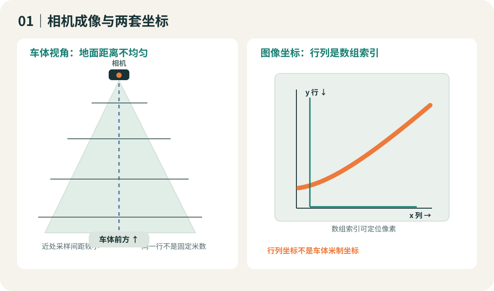
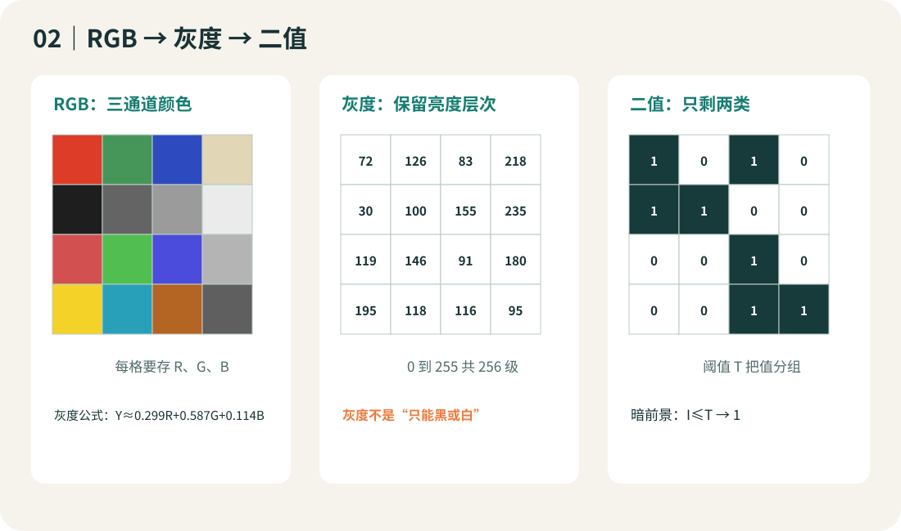
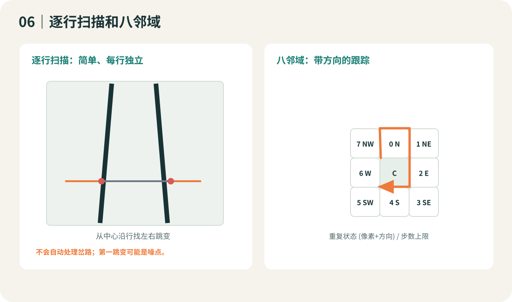
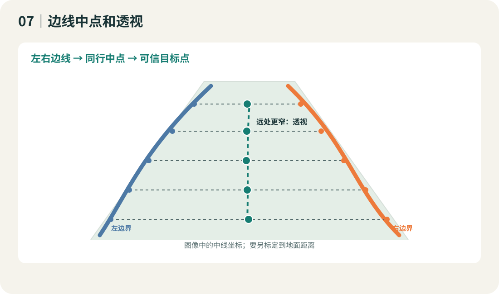
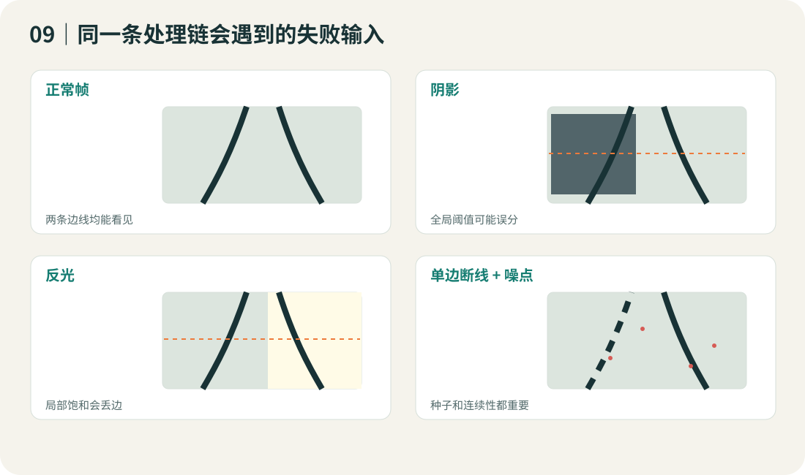
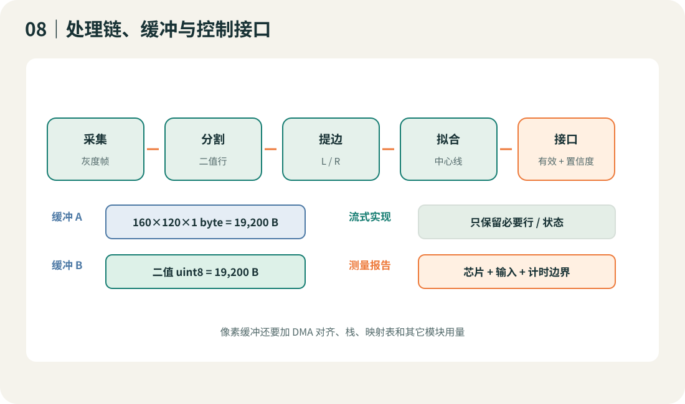
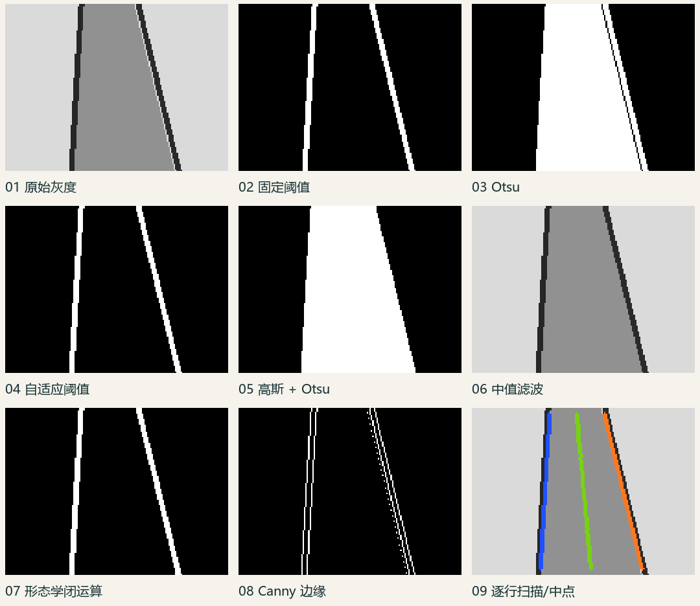

镜头车 · 新生训练
把像素变成
行驶线索
从摄像头的一格亮度开始，逐步得到左右边界、中线和可调试的视觉输出。每章都并列比较基础、进阶与横向方法。
先看图再算像素最后上板
沿学习路线开始 ↓

第一件事：分清图像坐标和车体坐标。
路线图01 / 09
从光线到控制接口
数据经过每一站都会少一些信息。每一步都要知道输入、输出，以及下一站还需要什么。
01相机成像
→
02灰度与阈值
→
03滤波与边界
→
04中线与事件
→
05板上输出
适用范围
按通用单目摄像头循迹设计。具体届次、组别、相机、主控、限高与赛道元素没有由实验室提供；开课前对照组委会最终规则复核。练习图均由程序生成，不代表真实赛场。
互动实验 01二值化
拖动阈值，看前景如何改变
左边是合成灰度帧；右边把低于阈值的暗像素标成白色前景。改变场景或阈值，观察阴影和反光怎样干扰固定阈值。
灰度输入 · 160 × 120
二值结果 · 白色 = 暗前景
暗前景像素：—
如果阈值太低，边线不出现；太高时赛道内部或阴影也可能变成前景。真实参数要用目标相机采集帧标定。
互动实验 02降采样与 RAM
降低分辨率，检查窄边线
右图先缩小再放大显示，便于看见降采样损失。数字只按图像尺寸与位宽计算，不代表目标板实际可用 RAM。
原始灰度 · 256 × 160
降采样后放大 · 最近邻显示
缩放后尺寸—
灰度 uint8 缓冲—
同尺寸二值位打包—
ROI/降采样减少空间像素；位打包减少每像素位数；PNG/JPEG 改变文件表示。三者对细节、RAM 和计算的影响不同。
主题 00数组与坐标
先知道每个像素在哪里
程序访问 img[y, x]：x 是列，向右增加；y 是行，向下增加。图像上方通常看到更远处，但距离不是按行线性增长。
图 1 · 图像索引不是车体米制坐标。
基础算法
数组与 ROI
读出 H×W×C、dtype 和行跨度，再裁出感兴趣区域。输入整帧，输出需要的像素范围；运算量由 HW 降到 HrWr。
进阶算法
曝光与视野标定
看直方图是否压在黑/白端；用已知地面距离和画面位置测视野。饱和剪裁或严重模糊丢掉的信息不能靠改阈值恢复。
横向扩展
Bayer、YUV、灰度传感器
检查传感器原始格式、通道顺序、行跨度和字节序。Y 平面或灰度输出可跳过颜色变换；需要颜色特征时灰度会丢信息。
失效条件与资源
曝光、畸变、相机安装角度、运动模糊和视野范围都会改变图像。8-bit 灰度缓冲需要 HW 字节；具体赛制限高每年每组核验。
资料：OpenCV 图像数组与灰度操作 · CSDN 历史镜头经验
主题 01单通道亮度
灰度化：简化颜色，保留层次
8-bit 灰度还有 256 个亮度级别。它不是黑白图，只是每个像素从多通道变成一个亮度值。

图 2 · 灰度保留亮度，二值只保留类别。
基础算法
加权 RGB
Y≈0.299R+0.587G+0.114B。RGB=(100,150,200) 得约 141。OpenCV 彩色输入常用 BGR 顺序，不能把通道名写反。
进阶算法
伽马与 CLAHE
伽马改变暗/亮区域的映射；局部直方图增强可增加对比，却会放大噪点。两者都不能找回已饱和或未采到的细节。
横向扩展
直接取 Y 或灰度输出
若摄像头已有 Y 平面/灰度格式，可少做一次转换；同亮度不同颜色的赛道标记也会因此无法区分。
失效条件与资源
灰度适合亮度差异明显的边线；彩色材料可能在灰度后混淆。RGB888 需要 3HW 字节，灰度需要 HW 字节；逐像素变换为 O(HW)。
资料：OpenCV Operations with images
主题 02前景 / 背景
黑白二值化：定义好前景极性
本文统一用白色前景显示暗边线，条件是 I≤T。二值图只有两类，不再包含原始亮度强弱。
 图 3 · 双峰间的阈值有机会同时分开两类。
图 3 · 双峰间的阈值有机会同时分开两类。
基础算法
固定阈值
逐像素判断 I≤T。T=100 时，99 是前景，101 是背景。输入灰度图和一个数，输出二值掩码；直观但怕光照整体变化。
进阶算法
Otsu / 自适应阈值
Otsu 从直方图选全局类间分割；局部均值法每个窗口使用不同 T。一个适合双峰，另一个适合缓慢变化光照；局部窗口要权衡噪声与阴影。
横向扩展
迭代双均值 / 时序 / 判点
迭代更新亮暗两组均值中点；时序方法限制相邻帧阈值变化；若仅需少数行可按需比较局部灰度，不必保存整幅二值图。
失效条件与资源
阴影、反光、污渍、前景方向写反、非双峰直方图都可能使分割出错。逐像素法 O(HW)；朴素局部窗口 O(HWk²)，积分图可降到 O(HW) 并增加缓冲。
资料：OpenCV Image Thresholding · 第 17 届二值化实践个案
主题 03像素数 / 像素位数 / 文件
图像减量：三种“压缩”分开算
空间裁剪、位打包和 PNG/JPEG 编码改变的是不同东西。先确认瓶颈是视野像素、RAM 还是传输字节。
 图 4 · 像素数量、位宽、文件表示分开考虑。
图 4 · 像素数量、位宽、文件表示分开考虑。
基础算法
裁剪与降采样
裁剪 ROI 或隔点取样减少像素数量；160×120 缩到 80×60，像素数变四分之一。会丢掉画外信息或窄边线。
进阶算法
位打包与行缓存
uint8 的 0/1 仍每像素 1 byte；8 个二值点按 bit 打包才约省 8 倍。行缓存省 RAM，但同样像素仍需处理。
横向扩展
PNG / JPEG
PNG 无损编码，JPEG 通常有损；改变文件/传输表示。解码后依然可能要一整幅原尺寸工作缓冲。
手算 RAM
160×120 灰度 uint8 = 19,200 B；二值 uint8 也是 19,200 B；位打包为 ceil(19,200/8)=2,400 B。双缓冲乘 2；DMA、对齐、栈和其它模块还需另算。
资料：USTB_Swan 资源取舍记录 · OpenCV resize 与几何变换
主题 04降噪但不抹线
滤波和形态学：修噪声也会修掉目标
先看噪声类型，再挑一个尽量小的算子。每次操作都要比较边线是否变细、断裂或连在一起。
 图 5 · 中值能压孤立尖峰，细线仍可能被抹掉。
图 5 · 中值能压孤立尖峰，细线仍可能被抹掉。
基础算法
均值 / 中值
均值取邻域平均，平滑却模糊边缘；中值取邻域排序中间值，适合孤立椒盐噪点。
进阶算法
高斯与开闭运算
高斯按距离赋权平滑；开运算先腐蚀后膨胀，去小白点；闭运算先膨胀后腐蚀，填小黑孔。
横向扩展
按噪声来源处理
椒盐试中值，连续噪声试高斯，缓慢照明变化先改善曝光或阈值；长断线要靠时序/几何证据，而不是加大核。
资源和风险
k×k 直接邻域遍历约 O(HWk²)；固定 k 时为 O(HW)。窗口比真实线宽大时可能抹线、拓宽或把左右边界连起来。
资料：OpenCV Smoothing Images
主题 05从像素到坐标
边线提取：扫描、跟踪、筛候选
二值图还不是路径。循迹常只需要若干行的左右坐标；八邻域还可以提供边线生长方向，但遇岔路、断点需要可靠停止规则。

图 6 · 扫描线每行独立；八邻域沿连接像素移动。
基础算法
逐行左右扫描
从图像中心向两侧找第一处阈值跳变，输出 L[y]、R[y] 和有效标志。易理解、易显示；杂点可能抢先被当成边线。
进阶算法
八邻域 / 迷宫式跟踪
从种子按方向序检查八个相邻像素；记录像素与进入方向，遇岔路按约定选择，越界拒绝，重复状态或步数上限终止。
横向扩展
Canny / 连通域 / 轮廓
Canny 输出梯度边缘，连通域按邻接分组，轮廓表达区域边界；还需用位置、面积和宽度筛出赛道候选。
八邻域顺序与失效点
示例编号 N=0、NE=1、E=2、SE=3、S=4、SW=5、W=6、NW=7；方向顺序需固定。种子错、线断、岔路、贴边越界和闭环未终止都会出错。队伍开源个案中的方法取舍只适用于其输入与平台。
资料：USTB_Swan 图像处理记录 · OpenCV 轮廓教程 · CSDN 八邻域/迷宫法个案
主题 06路径几何
中线与透视：从两条边变成目标
同一行的左右边界可取中点；单边缺失时则需要经过标定的宽度模型，或投影到更好解释的鸟瞰平面。

图 7 · 中点依赖两侧边界都正确。
基础算法
双边取中点
C[y]=(L[y]+R[y])/2。L=38、R=122 时中点 80。输出中线及有效行标记。
进阶算法
单边、拟合、前瞻
按行标定半宽补单边；对有效点拟合 x(y)=ay²+by+c；从可信曲线选择前瞻点。离群点会带偏拟合。
横向扩展
鸟瞰单应变换
四对地面对应点估计 3×3 单应矩阵，再重采样成鸟瞰图。直道宽度更易比较，但需要标定、内存和插值。
输出接口
建议接口携带 frame_id、center[y]、valid[y]、confidence 和 event_hint。无效时明确报告，不要静默伪造坐标；后续控制课程再决定如何使用。
资料：OpenCV Perspective Transformation · USTB_Swan 逆透视工具说明
主题 07几何与多帧证据
赛道元素：给单帧判断加上时间
十字、环岛、坡道、断线或反光会让常规两边界假设暂时不成立。具体元素只在当前组别规则确认后纳入课程。

图 9 · 失败帧要与正常帧一起回放。
基础算法
几何候选
记录行宽、边线斜率、连续丢边长度和分支数，输出候选事件。先确认本届组别是否真的存在该元素。
进阶算法
多帧状态机与置信度
FOLLOW→APPROACH→ENTER→PASS→EXIT；用连续帧和滞回确认，低置信度回退并设置超时。权重由实际数据标定。
横向扩展
时间滤波与允许的传感器
短窗口中位数、指数平滑可缓和跳点；若规则和硬件允许，再融合编码器、IMU、颜色或目标识别。
失效边界
出画、曝光跳变、坡道透视、缺边或状态机不复位都可能出错。没有成套场景帧就不报告“识别率”。
资料：第 21 届规则组别线索 · SJTU AuTop OpenART · B 站状态机选学视频
主题 08可复现地上板
调试：找到第一个出错的步骤
固定输入、保留中间结果、量清计算边界，才能比较 PC 处理和 MCU 实现。

图 8 · 像素缓冲不是整机 RAM 的全部。
基础算法
离线回放
保存一组灰度输入，逐级导出灰度、二值、滤波、边线和中线；对照同一输入，定位第一个错误中间图。
进阶算法
时间与 RAM 预算
目标板单独测帧处理边界；统计双缓冲、DMA 对齐、映射表、栈、堆；考虑行复用、静态缓冲和定点数值误差。
横向扩展
质量-延迟-RAM 对比
在相同正常、急弯、缺边、阴影、反光、噪点和低分辨率输入上比较有效行、边线误差、目标板时间和峰值缓冲。
不能冒充的测量
这份材料不写虚构的 MCU 帧率、正确率或可用 RAM。每次板上报告都应附芯片、时钟、编译器、分辨率、代码版本、计时边界和样本数。
资料：USTB_Swan 离线调试工具 · SJTU AuTop RT1064-Code · LiveViewer 上位机
同一合成帧输入 → 中间结果
看每个处理步骤分别做了什么
九格图由 examples/demo.py 运行生成。合成图用于看流程，不替代实际赛道数据。

正常直道合成帧的 3×3 中间步骤。像素尺寸 160×120。
下载示例代码与输出Python 3.10–3.12 · OpenCV 4.12 · NumPy
来源与边界资料已分层
每条线索都能回到原页面
规则看目标届次和组别的最终文件；算法定义优先看 OpenCV 官方文档；队伍项目与个人文章只用于理解某次实践的取舍。
队伍开源（只链接与概述）
访问时仓库根目录未见明确许可证；没有复制源码、图片或界面。历史年份与硬件不同，不能直接外推。
随身词表9 个概念
术语简表
- 灰度图
- 每像素一个亮度值。
- 二值图
- 每像素只标记两类中的一类。
- 阈值极性
- 规定哪一类成为前景。
- ROI
- 任务真正需要的图像区域。
- 八邻域
- 上下左右与四个斜角邻点。
- 单应变换
- 平面到平面的 3×3 投影近似。
- 连通域
- 按邻接关系分出的前景像素组。
- 位打包
- 多个 1-bit 像素放入同一 byte。
- 帧回放
- 用同一已保存输入重复运行算法。